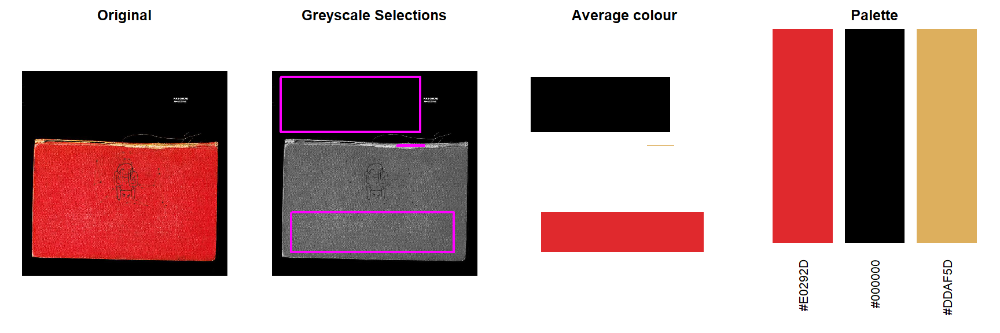
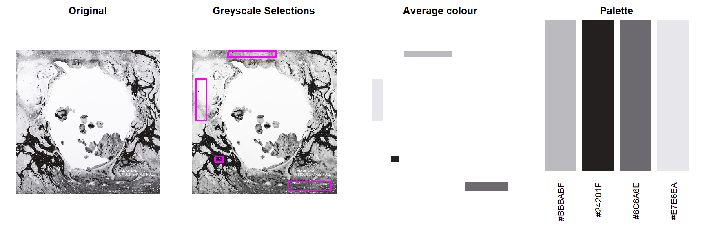
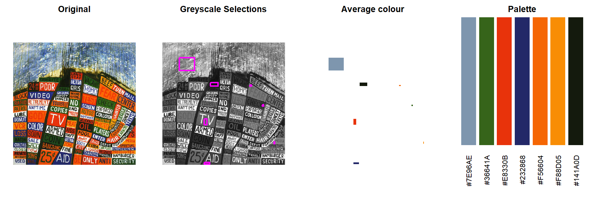
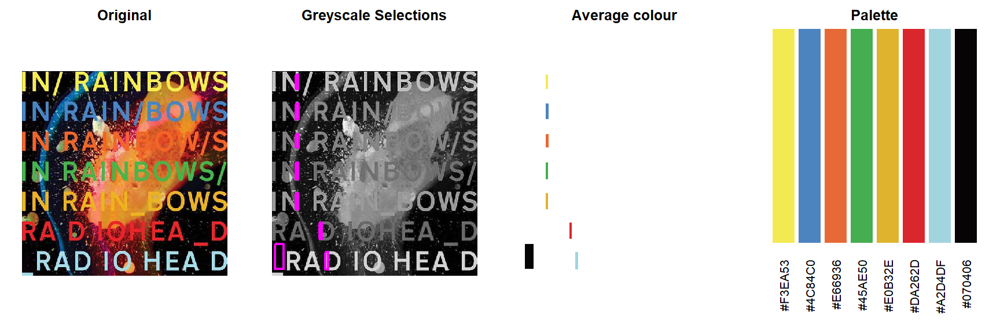
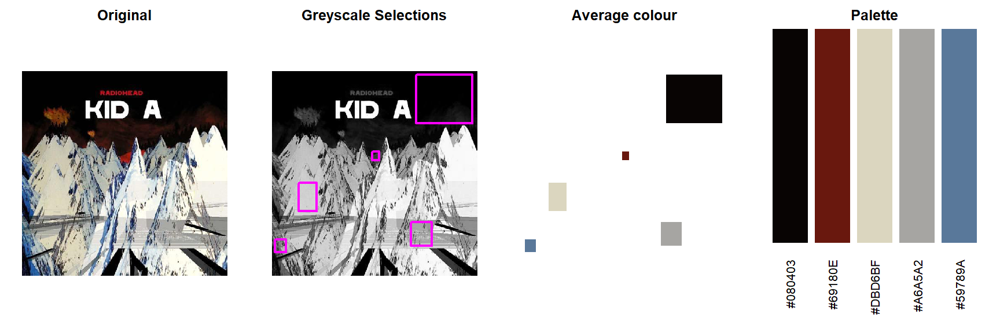
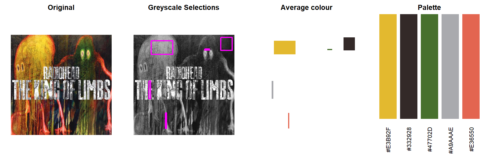
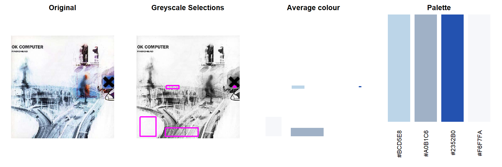
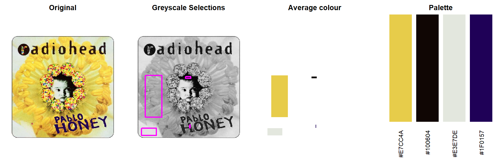
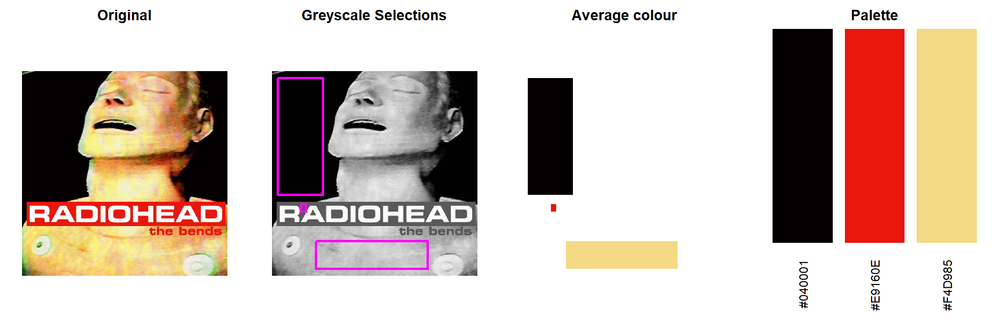

library(tidyverse)
library(jpeg)
library(reshape2)
library(knitr)avCol <- function(xleft, ybottom, xright, ytop){
df %>%
filter(x >= xleft, x <= xright, y>=ybottom, y<=ytop) %>%
summarise(red=mean(red, na.rm=T),
green=mean(green, na.rm=T),
blue=mean(blue, na.rm=T)) %>%
pmap_chr(rgb)
}
plotAreas <- function(xleft, ybottom, xright, ytop, av_colour, ...){
rect(xleft, ybottom, xright, ytop, col=av_colour, ...)
}
pPal <- function(hex, ...) barplot(rep(1, length(hex)), col=hex, names=hex, las=2, border=NA, axes=F, ...)directory <- system.file("extdata/album_covers", "", package = "inRainbows")
albums <- list.files(directory) %>% gsub(pattern=".jpg", replacement="", x=.)
palettes <- list()
for (j in seq_along(albums)){
# Read image
i <- readJPEG(paste0(directory,"/", albums[j], ".jpg"))
# Store dimensions
dim_x <- dim(i)[1]
dim_y <- dim(i)[2]
# Return 'friendly' image dataframe
df <-
melt(i) %>%
spread(Var3, value) %>%
rename(red="1", green="2", blue="3") %>%
mutate(Var1 = -Var1 + dim_y) %>%
rename(x=Var2, y=Var1) %>%
mutate(hex = pmap_chr(list(red, green, blue), rgb),
grey_number = pmap_dbl(list(red, green, blue), ~(..1+..2+..3)/3)) %>%
select(x, y, red, green, blue, hex, grey_number)
# Create a greyscale
mygreys <- colorRampPalette(c('black','white'))
# Add greyscale hex values
nlevels <- length(unique(df$grey_number))
df <-
df %>%
mutate(grey_hex =
mygreys(nlevels)[cut(df$grey_number, nlevels)])
# Read imajeJ selection coordinates and adjust to 'friendly' format
imj_directory <- system.file("extdata/imageJ_selections", "", package = "inRainbows")
imj <-
read_csv(paste0(imj_directory,"/", albums[j], ".csv")) %>%
mutate(xleft = BX,
ytop = -BY + dim_y,
xright = xleft + Width,
ybottom = ytop - Height)
imj <-
imj %>%
mutate(av_colour = pmap_chr(list(xleft, ybottom, xright, ytop), avCol))
# Plot image and selections
par(mfrow=c(1,4), mar=c(1,1,2,1))
plot(df$x, df$y, col=df$hex, pch=".", asp=1, axes=F, xlab="", ylab="", main="Original")
plot(df$x, df$y, col=df$grey_hex, pch=".", asp=1, axes=F, xlab="", ylab="", main="Greyscale Selections")
invisible(pmap(select(imj, xleft, ybottom, xright, ytop), rect, border=6, lwd=2))
plot(df$x, df$y, col=df$hex, pch=".", asp=1, axes=F, xlab="", ylab="", type="n", main="Average colour")
invisible(pmap(select(imj, xleft, ybottom, xright, ytop, av_colour), plotAreas, border=NA))
par(mar=c(6,1,2,1))
pPal(imj$av_colour, main="Palette")
palettes[[j]] <- imj$av_colour
}
names(palettes) <- albums